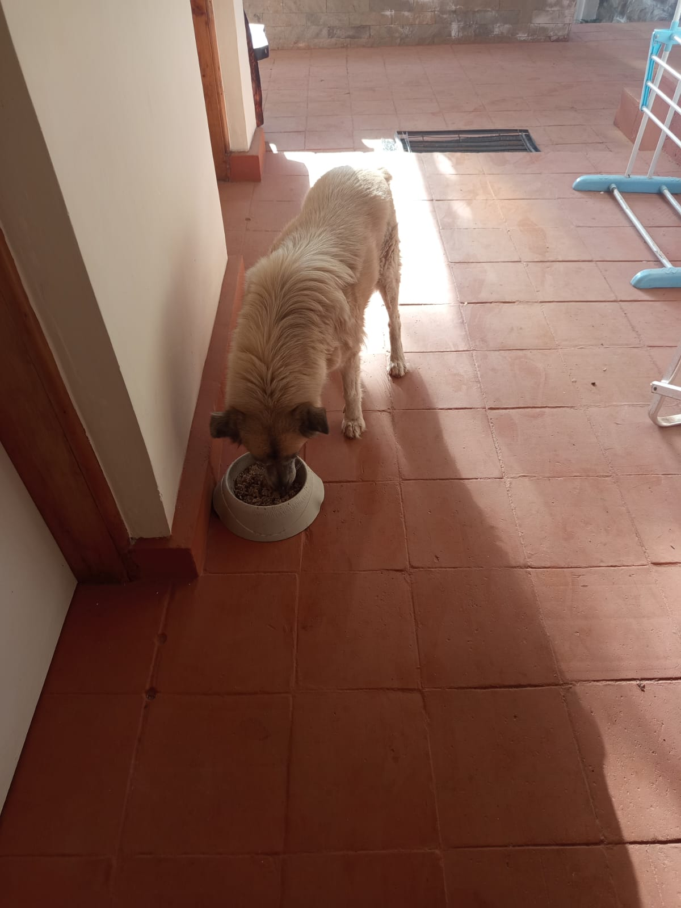

Mucheru World of Golf
- Dam No. 2 Clearance & Material Haulage: Comprehensive clearance operations conducted within Dam 2 basin utilizing the Backhoe Loader to excavate and load earth into the farm tractor trailer.
- Trailer Haulage Logistics (15 Total Trips — Overseen by Kinoti):
- 11 Trips: Murram hauled within the golf site from the excavated location directly to the main gate zone.
- 3 Trips: High-grade excavated material transported from the golf site to Chaka Farms (discharged adjacent to the greenhouse).
- 1 Trip: Surplus earth dumped at designated course disposal and filling grounds.
- Tee Box No. 15 Precision Leveling: Extensive subgrade profiling, soil compaction, and surface grading completed across Tee Box 15 to achieve design elevations.
- Palm Tree Hole Excavation (High-Speed Plant Execution): Backhoe Loader deployed along the boundary alignment to excavate tree planting holes, achieving a rapid average pace of 1 hole every 5 minutes (4 holes completed in 20 minutes).
- Greens Survey Marking (Greens 12, 13, 14, 16 & 17): Topographical gridlines and contour boundaries marked with white lime across 5 key greens, providing precise visual reference lines for earth shaping and drainage slope execution.
- Executive Site Walkthrough & Strategic Review: Comprehensive on-site walkthrough and planning session conducted with Joe, analyzing completed construction milestones and aligning operational strategies for subsequent fairway shaping and green infrastructure.
| Equipment / Activity | Operating Duration | Unit Rate (KES) | Total Cost (KES) |
|---|---|---|---|
| Backhoe Loader (Dam 2 Clearance, Palm Holes & Tee 15 Leveling) | 8.0 hrs | 6,500 / hr | 52,000 |
| Farm Tractor Trailer (12 Golf Internal + 3 Farm Trips) | 15 Trips | Internal Farm Asset | Internal |
| Total Direct Equipment Expenditure | KES 52,000 | ||
Milestone Accomplished — 5 Greens Marked & Tee Box 15 Leveled
Survey layout marking for Greens 12, 13, 14, 16, and 17 is now complete, providing immediate clearance for shaping machinery. Tee Box 15 has been brought to full grade profile.
🎥 Operations Video Records — Golf Course
🎬 Comprehensive Site Operations: Greens Survey Marking, Tee Box 15 Leveling & Palm Tree Digging
Comprehensive video footage covering key golf course milestones: white lime survey grid marking across Greens 12, 13, 14, 16 & 17, mechanical subgrade grading and precision leveling on Tee Box 15, and high-speed palm tree hole excavation along the boundary perimeter corridor.
🚜 Dam 2 Murram Loading Sequence
Backhoe Loader loading excavated subsoil and murram directly into the red farm tipping trailer in Dam 2 basin.
🚜 Trailer Murram Loading & Haulage
Continuous earthmoving cycle loading haulage material for transport to Chaka Farms and course fill zones.
🌴 Boundary Palm Tree Hole Excavation
Backhoe Loader rear digging arm excavating tree pits along the stone boundary corridor at ~5 mins per pit.

Tee Box No. 15 Graded & Leveled
Aerial perspective displaying the freshly graded subgrade platform of Tee Box 15 running parallel to the perimeter boundary fence.

Greens Survey Marking — White Gridlines
Drone capture showing two distinct putting green footprints delineated with precise radial and contour reference chalk lines.

Contour Grid Layout on Marked Green
Geometric survey lines chalked across cleared green platform establishing accurate cross-fall and surface water run-off slopes.

Teardrop Green Profile Survey Layout
Overhead view of specialized green profile marked on graded foundation earth with surrounding access pathways clearly mapped.

Expansive Green Boundary & Excavator Alignment
Aerial view highlighting the large hourglass green boundary marked on earth with Kobelco excavator stationed nearby for subsequent sub-base trenching.

Backhoe Loader Loading Earth onto Farm Trailer
Heavy plant bucket discharging excavated Dam 2 murram directly into the tractor-towed red farm tipping trailer.

Trailer Haulage Loading Point
Backhoe Loader filling the red farm trailer with murram destined for internal road grading and farm greenhouse deliveries.

Boundary Line Palm Tree Excavation
Backhoe Loader rear arm digging uniform pits spaced along the stone-gabion boundary fence for ornamental palm planting.

Boundary Tree Line Excavation Alignment
High-angle shot illustrating the straight alignment of palm tree excavation pits along the perimeter wall corridor.

Tree Planting Pit Depth Verification
Close-up inspection of excavated pit showing root-depth penetration through topsoil and loose volcanic loam layers.
Chaka Farms
- Daily Dairy Milking Yield: Recorded a robust daily output of 9.0 Litres across morning and evening milking sessions.
- Goat Kids Nutritional Ration: Goat kids received their dedicated daily ration of 1.0 Litre (0.5 L morning session and 0.5 L evening session).
- Cowshed Floor & Trough Pressure Washing: Thorough daily sanitation and high-pressure hose-down of concrete feeding troughs and stall floors, maintaining peak hygiene standards.
- Maize Stalks Fodder Shredding: Willy, Mwangi, and Kamandau processed large batches of green and seasoned maize stalks through the motorized chaff cutter, generating high-yield nutritious silage feed for the herd.
| Production Category | Morning Session | Evening Session | Daily Total |
|---|---|---|---|
| Dairy Cattle Milking Yield | 5.5 Litres | 3.5 Litres | 9.0 Litres |
| Goat Kids Milk Ration | 0.5 Litres | 0.5 Litres | 1.0 Litre |
- Morning Off-Leash Exercise: Handlers conducted the morning off-leash field walking routine, promoting stamina and social engagement across open paddocks.
- Afternoon Bathing, Washing & Grooming: Comprehensive afternoon bathing session using medicated shampoo and warm rinsing, followed by brushing and sun-drying.
- Obedience, Paw Command & Kennel Manners: Structured handler drills focusing on impulse control, patience during kennel gate opening, and paw command execution.
- Staff Welfare & PPE Asset Distribution: Kinoti officially received and was outfitted with his new branded Chaka Farms operational protective attire and cap.
- Farm Compound Cleanliness (Margaret & Monica): Complete sweeping, garden maintenance, weed clearance, and paddock cleanliness maintained across all central farm avenues.
🎥 Canine Training Video Record
🐕 Canine Manners & Paw Command Training
Structured handler session demonstrating impulse control at open kennel gates and paw obedience commands.

Cowshed Sanitation & Water Wash-down
Farm hand pressure-cleaning the concrete livestock bays with green hosepipe adjacent to the straw and hay storage loft.
 cleaned.jpeg)
Immaculate Concrete Floor & Feeding Troughs
Spotless post-wash inspection of concrete feeding mangers and floor drainage slopes ready for evening fodder distribution.

Motorized Chaff Cutter Fodder Processing
Motorized shredder unit producing finely chopped maize stalk forage for optimal cattle digestion and milk yield enhancement.

Freshly Shredded Livestock Forage
Large stockpile of shredded green and dry maize stalks prepared in the silage bunker by Willy, Mwangi, and Kamandau.

Willy Conducting Canine Bathing
Canine handler Willy thoroughly rinsing the white shepherd during the warm afternoon washing and grooming session.

Groomed Canine at Wash Station
Freshly shampooed canine drying off beside the washing tub before final coat brushing and inspection.

Post-Grooming Relaxation in Kennel Run
White shepherd in clean, sanitized kennel corridor following completion of the afternoon grooming routine.

Canine Unit Rest & Rehydration
Groomed dog stationed calmly in the shaded kennel stall beside freshwater bowl after training drills.

Kennel Manners & Gate Control
Demonstrating disciplined waiting behavior at open kennel gate prior to receiving handler release command.

Clean Kennel Environment & Care
Canine standing alert in individual enclosure featuring dry bedding and fresh water provision.

Staff PPE — Kinoti in Branded Farm Overalls
Kinoti outfitted in his official green Chaka Farms overall uniform and branded cap, enhancing professional standards on site.
Kabete Residence
- Central Water Filtration System Installation (In Progress): Specialist technicians from Quantum Group installed and integrated a high-capacity LongTech FRP media filtration cylinder, dual sediment cartridge pre-filters, and pressure pump interconnects to supply purified water from the main storage tanks.
- Perimeter River Gate & Cold Room Gate Metal Fabrication:
- Angle-grinding, weld reinforcement, and hinge alignment on the steel security gate overlooking the river corridor.
- Fitting and precision arc welding of custom geometric steel security gate adjacent to the cold room steps using portable Royce welding gear.
- Guest House to River Stone Drainage Channel: Excavation, cut stone block lining, and cement plastering along the slope gradient from the guest house towards the river to direct storm runoff efficiently.
- Outdoor Fireplace Pit Clearance & Demolition: Excavation crew cleared rubble, dismantled masonry, and excavated deep subsoil foundation for the remodeled outdoor fireplace installation.
- Main Gate Dog Kennel Repair & Positioning: Welded steel mesh kennel enclosure repaired and positioned in place against the stone boundary wall, with final fittings underway.
- Resident Domestic Pet Care: Routine domestic feeding and welfare oversight provided for Ajabu the Golden Retriever and the resident cats (Aiko, Reo, and companions).
Water Treatment Milestone — Central Filtration Unit Assembly
The LongTech multi-stage filtration vessel and cartridge filter bank are successfully mounted and plumbed into the pump network. Final pressure testing and valve calibration are scheduled next.

LongTech FRP Filtration Vessel Setup
Technicians mounting the multi-port automatic control valve onto the blue LongTech media filtration pressure tank near main water storage.

Quantum Group Water Specialists on Site
Specialist plumbing technicians tightening top valve fittings and electrical connection harnesses on the central water treatment cylinder.

Multi-Stage Filtration Bank Integration
Complete assembly showcasing dual blue pre-filter housings, LongTech media tank, and interconnecting PPR/PVC piping.

Booster Pump & Wall Plumbing Alignment
Technicians connecting green PPR pipelines to the automatic pressure pump housed in the dedicated stone wall alcove.

Main Water Storage Interconnection
Wide perspective showing large water reservoir tanks, pump station, and filtration manifold being integrated into the residence supply.

Riverbank Security Railing Modification
Fabricator grinding and sizing black steel fence railing along the lush riparian perimeter corridor.

Precision Grinding & Edge Preparation
Angle grinder in operation smoothing steel joints prior to primer application and protective topcoat painting.

Geometric Security Gate Alignment
Fabricator carrying the newly built decorative steel security gate down stone steps to the cold room entrance.

On-Site Arc Welding of Cold Room Gate
Two technicians welding gate frame hinges with Royce inverter welding kit outside the cold room entrance.

Reinforced Gate Barrel Hinge Weld
Close-up view of fresh solid weld bead on the heavy-duty barrel hinge securing the river perimeter gate.

Guest House Drainage — Stone Invert Channel
Dressed building stone blocks laid in excavated trench to form the stormwater runoff channel heading towards the river.

Drainage Line Graded Slope Alignment
Stone-lined channel extending through the tree canopy ensuring optimal gravity discharge for estate rainwater runoff.

Cement Mortar Plastering of Drainage Invert
Smooth concrete plaster finish applied over masonry stone channel bed to prevent soil scouring and facilitate rapid water flow.

Outdoor Fireplace Foundation Excavation
Workers excavating subsoil and clearing old foundation masonry inside deep pit for the new outdoor fireplace structure.

Main Gate Dog Kennel Structural Repair
Arc welding repair of steel mesh frame for the gate guard dog kennel enclosure positioned near garden hedges.

Kennel Enclosure Placed on Leveled Pad
Assembled steel mesh dog kennel unit set in place against stone perimeter wall awaiting final roof and latch fittings.

Ajabu the Golden Retriever — Evening Feed
Ajabu enjoying his nutritious evening meal on the clean terracotta-tiled residence veranda.

Resident Cats — Dinner Routine
Aiko, Reo, and companion dining peacefully from dedicated stainless steel bowls on the tiled indoor veranda.
Amani Cottage
- Training & Securing Flowering Vines at Parking Area: Grounds team utilized stepladders to carefully train, prune, and tie vigorous flowering climbing vines across the timber log pergola canopy over the vehicle parking bay.
- Comprehensive Compound Cleanliness: Meticulous compound sweeping, leaf litter removal, and paved courtyard maintenance executed across the entire cottage frontage and driveway.
- Garden & Lawn Irrigation: Systematic evening sprinkler and hose watering applied to front lawns, ornamental garden beds, and peripheral greenery to preserve lush foliage.

Carpark Pergola Flowering Vine Canopy
Lush flowering vines trained and secured over the rustic timber beam carport pergola frame to create shaded overhead cover.

Canopy Vine Alignment & Pruning Access
Stepladder positioned for precision tying, deadwood pruning, and directional vine training along the shade-net carport roof.